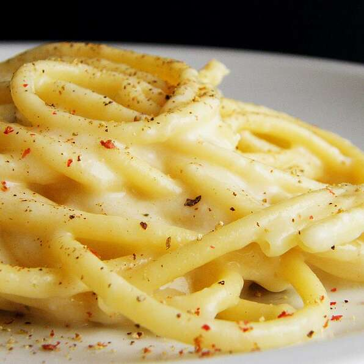

Bucatini Cacio e Pepe (Roman Sheep Herder's Pasta)

Description
Ingredients
- 1 teaspoon salt
- 1 pound bucatini (dry)
- 2 cups finely grated Pecorino Romano cheese
- 1 ½ tablespoons freshly ground black pepper, or more to taste
Steps
- Bring a large pot of water to a boil and add salt. Cook bucatini in the boiling water, stirring occasionally, until tender yet firm to the bite, 8 to 10 minutes.
- Place grated Pecorino Romano cheese into a large glass bowl and mix with a fork to make sure the cheese contains no lumps.
- Once the bucatini are al dente, lift them out with a spaghetti fork or tongs and put them directly into the bowl with the cheese. Do not allow the water to drain too much.
- Add one ladle of pasta water to the bowl. Stir the bucatini around until a cream has formed. Add more pasta water, little by little, until a thick cream has formed. Sprinkle freshly ground pepper over the pasta. Toss and serve immediately.
Back to main page